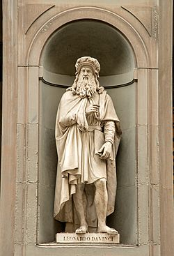

Although he had no formal academic training, many historians and scholars regard Leonardo as the prime exemplar of the "Universal Genius" or "Renaissance Man", an individual of "unquenchable curiosity" and "feverishly inventive imagination." He is widely considered one of the most diversely talented individuals ever to have lived. According to art historian Helen Gardner, the scope and depth of his interests were without precedent in recorded history, and "his mind and personality seem to us superhuman, while the man himself mysterious and remote." Scholars interpret his view of the world as being based in logic, though the empirical methods he used were unorthodox for his time.
Leonardo's fame within his own lifetime was such that the King of France carried him away like a trophy, and was claimed to have supported him in his old age and held him in his arms as he died. Interest in Leonardo and his work has never diminished. Crowds still queue to see his best-known artworks, T-shirts still bear his most famous drawing, and writers continue to hail him as a genius while speculating about his private life, as well as about what one so intelligent actually believed in.